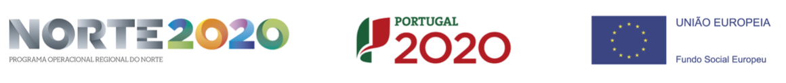

"Tell me a story, Siri"
The voice as an emerging medium for interaction
(in digital art)Terhi Marttila, University of Porto
This work was financially supported by: Operation NORTE-08-5369-FSE-000049 co funded by the European Social Fund (FSE) through NORTE 2020 - Programa Operacional Regional do NORTE.
How does the use of the voice
enrich the experience
for the user/interactor?
We focus on
using the voice
to speak to "a system"
ie. by using natural language
"Tell me a story, Siri"
The use of the voice
as a means of interaction
is hardly an "emerging" phenomenon:
Conversational agents
ELIZA (1966)
Joseph Weizenbaum
Image capture from page 39: Weizenbaum, J. (1966). ELIZA---a computer program for the study of natural language communication between man and machine. Communications of the ACM, 9(1), 36-45.
ELIZA TAlking (2013)
Joseph Weizenbaum / Norbert Landsteiner
Image capture from: https://www.masswerk.at/eliza/

Head (1999-2000)
Ken Feingold
Image credit: Kansallisgalleria / Mykkänen, Pirje

Prosthetic Head (2003)
Stelarc
Website of Stelarc: https://stelarc.org/?catID=20241
More recent work

The Listeners (2015)
John Cayley
Image credit: John Cayleys website
Available at: https://programmatology.shadoof.net/images/TheListenersSLSAInstall_Nov4_2016.png
In The Listeners, the user initiates the "reading" by using their voice,
prompting: "Alexa, ask the Listeners".
This work uses the voice to "press a button", eg. "Alexa, go on"
and the role of the audience/participant/user is to listen (or to "read")
Frankie (2012)
Maayan Sheleff, Eran Hadas and Gal Eshel
Image credit: Screen capture from Frankie presentation video
Available at: http://frankieproject.com/
Image credit: Screen capture from a video with Frankie
Available at: http://frankieproject.com/
The video archive is excellent
because it allows us to make observations
about how humans interact with Frankie
Frankie listens, but hardly understands. And it doesn't matter.
Frankie is immersive: some of the participants lose themselves in their reflections
inspired by Frankies questions.
Frankie, as an artwork and as an experience
is more about the monologues it inspires.
Or video performances, even.
Some research in progress
We Cannot Take Them All (2019)
Terhi Marttila
Image credit: Screen capture from the site
Available at: http://givemeareason.info/whyareyouhere/we-cannot-take-them-all/
"Citizenship in Western democracies is the modern equivalent of feudal class privilege - an inherited status that greatly enhances one's life chances. To be born a citizen of a rich state in Europe or North America is like being born into the nobility... " (Carens 2015, 226)"
Carens, Joseph (2015) The Ethics of Immigration. Oxford: Oxford University Press
"What is happening to the others is too bad, but it's not our fault.
We cannot take them all.
We have our own problems.
A large infux of them could be a cultural and political threat."
"Besides, while they may be subject to discrimination and violence, things are not as bad as they say.
They exaggerate the problem.
Many of them just want better economic opportunities.
Times are tough here. We have an obligation to look out for our own needy first."
We Cannot Take Them All (2019)
Terhi Marttila
Image credit: Screen capture from the site
Available at: http://givemeareason.info/whyareyouhere/we-cannot-take-them-all/
"I am portuguese"
"I am finnish"
etc.
"What is this?"
"Speak my poem"
This work ends up being largely about accents.
It is about exposing the audience to various accents of english,
and through these accents,
exposing the audience to various nations and nationalities,
in order to underscore our differences
in so far as we are members of
cultural and linguistic groups much larger than our individual selves.
The purpose is to speak these anti-immigrant sentiments
like a mantra, over and over again,
in different "languages"
To procedurally exert Carens' point:
No matter what the country or language,
those against migration regurgitate the same, age old justifications for their ideology.
Some hypotheses and ongoing research questions:
1. If speech is interface,
you can literally "put words in peoples mouths"
As procedural rhetoric:
"Nothing will happen unless you say this"
2. If speech is interface,
you can easily be misunderstood.
As procedural rhetoric:
We can invoke the frustration of being misunderstood
for purposes of rhetoric.
(((3. If speech is interface,
you can enjoy seeing your speech visualised
as text by the recogniser)))
(((4. If speech is interface,
hearing your own voice
becomes a part of the experience)))
Thank you
terhim@gmail.com